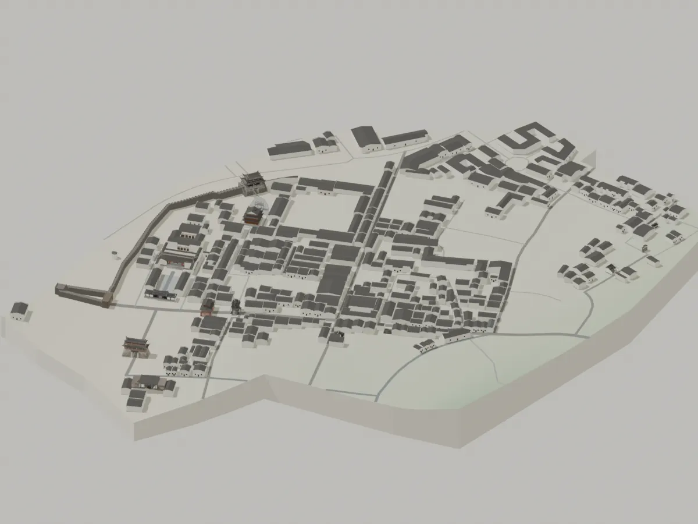

这里帮助你准备合照素材，不会在本站上传人像或自动生成图片。合成结果应注明为 AI 合成。
这里是一份三维走读游记，不是第一人称碰撞游戏。选择章节，镜头会来到对应景点；也可以拖动、缩放，自由看城。
场景以地图轮廓和参考图为基础，采用近似徽派外壳。地形表达宏观高差，普通民居细节、部分建筑体量与高度为近似；博物馆展示北入口及近似体量，不宣称实测整馆。
章节顺序是阅读引导，不代替实地导航。文字为本项目编写的走读叙述，不冒充实地采访或个人访问记录。
地图：© OpenStreetMap contributors（ODbL）。地形：Copernicus / Open-Meteo。三维资产：Meshy T2 与 Blender 修正。查看来源与使用边界 ↗
请启用 JavaScript 体验三维古城；静态总览仍可查看。